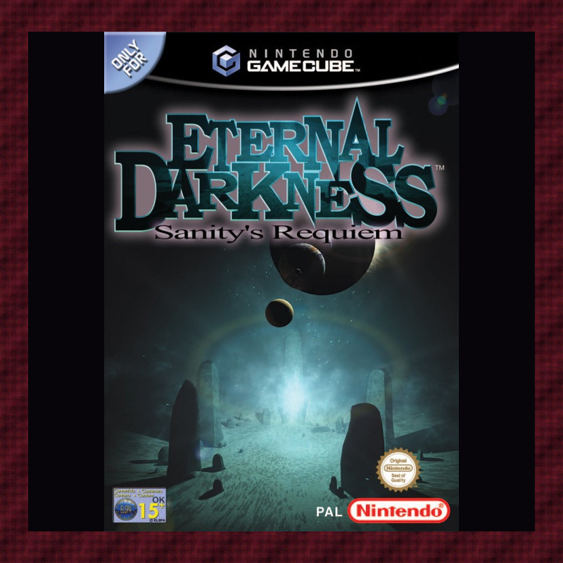
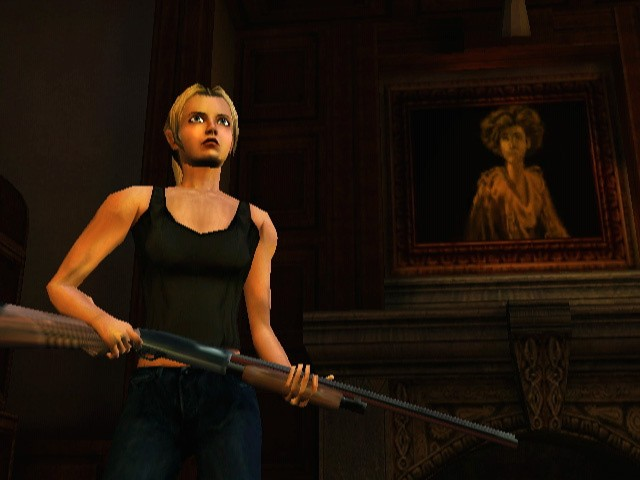
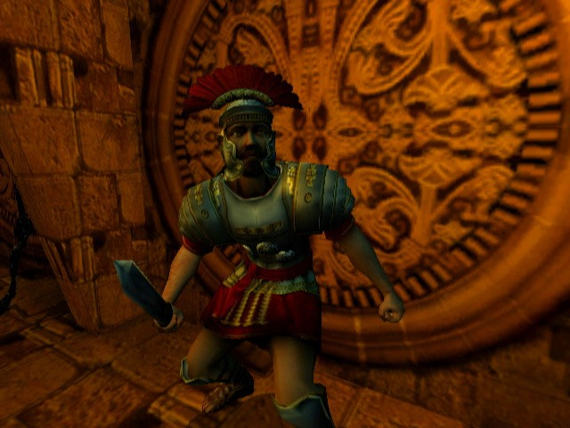
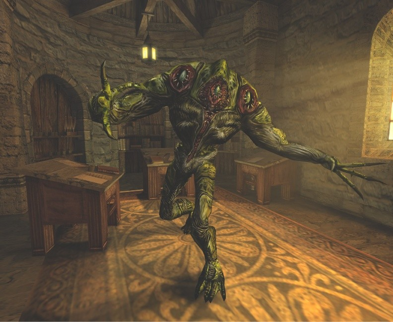
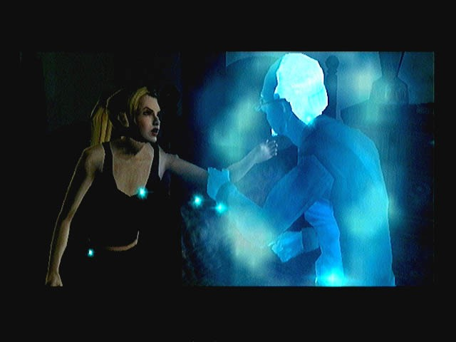

Eternal Darkness
A family death opens a history-spanning mystery. Follow the Tome through twelve playable lives, confront ancient horrors, and question what the Sanity System shows you.

| Platform | Nintendo GameCube |
|---|---|
| Genre | Psychological horror / action-adventure |
| Released | June 24, 2002 (North America); November 1, 2002 (Europe) |
| Developer | Silicon Knights |
| Publisher | Nintendo |
| Available | Original GameCube disc; emulation with your own dumped game image |
Playtime
Varies by route and alignment clears; no verified estimate is listed here.
Where to Play
About This Game
Alexandra Roivas investigates her grandfather’s death in Rhode Island. The Tome of Eternal Darkness draws her into a conflict stretching across centuries and a cast of playable characters in different eras.
Explore, fight, and use magic while the Sanity System unsettles what appears to be happening on-screen. Choices made at the opening lead to three distinct artifact-alignment paths.
Did You Know?
- Twelve perspectives: Nintendo describes twelve controllable characters in a story spanning roughly two millennia.
- Sanity as misdirection: The Sanity System can trigger hallucinations that intrude on what looks like the game world.
- Three opening artifacts: Pious’s choice among three artifacts changes the campaign path; continued clears unlock another cinematic.
Critical Reception
IGN’s original 2002 review praised the atmosphere, controls, audio, and ambitious story.
Club Achievements
For the alignment challenges, choose a different one of the three opening artifacts—green, red, or blue—on each playthrough. Continue from cleared GameCube memory-card data; after all three distinct paths, the extra cinematic appears.
- The Tome Opens: Complete the game.
- Two Ancient Paths: Complete the game in 2 alignments.
- Eternal Revelation: Complete the game in all alignments and unlock the secret epilogue.
Other Participants
No participant submissions recorded yet.
Speedrun Records
See the live Eternal Darkness categories and records on Speedrun.com; no changing record time is pinned here.
Current leaderboards on Speedrun.com →Soundtrack
Soundtrack attribution: Steve Henifin
Steve Henifin is credited with composition on the 2002 Nintendo Power soundtrack album. Its track list includes “The Chosen,” “Black Rose,” and “Sanity’s Requiem.” This is an album credit, not a transcription of the game’s credit roll.
Screenshots




Gameplay screenshots via Nintendo Life’s Eternal Darkness screenshot gallery.
Sources & Attribution
- Nintendo: Eternal Darkness — GameCube platform, developer, publisher, setting, and Sanity System
- Nintendo Life: game profile — North American release date and box art
- IGN: 2002 review — contemporary 9.6/10 Editors’ Choice assessment
- IGN guide: The Chosen One — three opening artifact choices
- IGN guide: Endings — continued cleared save and additional ending
- Soundtrack Central: soundtrack album — Steve Henifin’s album composition credit and track list
- PriceCharting: GameCube edition — secondary-market reference, not a fixed price
- Dolphin emulator — GameCube emulator information
- Nintendo Life’s Eternal Darkness screenshot gallery — screenshot image source
- Speedrun.com: live leaderboard — current run categories and records
- Longplay of Eternal Darkness: Sanity's Requiem — LongplayArchive video and thumbnail